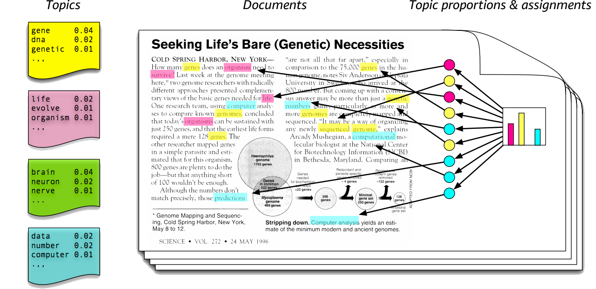
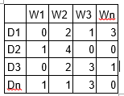
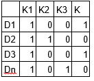
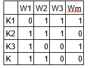

NLP Use Cases and Implementations: Part 1
Posted on Dec 09, 2017 at 12:31 PM

"Natural language processing" refers to the use and ability of computers to understand and process sentences in a natural language that we human speak, rather than in a programming languages.
NLP are applied in various areas, we will be looking at some of the most popular use cases in this series, in this part we will focus on below,
- Document Classification
- Sentiment Analytics
- Topic Modeling
Document Classification: Is one of the oldest and most common problem in NLP, where, given a document it has to be classified to one of the pre-determined classes. One most common example is spam filtering, in this the text i.e. email coming in to your mailbox has to be checked for spam, so the mail is classified as “spam” or “not spam”. One other area where this is common in Industry is in IT service and operations, where a user is logging a new ticket for any issue he sees with the application, this ticket has to be assigned to a responsible group. Currently this task is done manually, but more and more organizations are looking to use NLP to do auto assignment.
Simple implementation of document (text) classification using scikit-learn package will look like below
Full code is available here .
For complex dataset, we can use deep learning.
A CNN text classification example implemented in keras with tensorflow backend is here.
Sentiment Analytics is process of determining whether a tweet or comment or a blog is positive, negative or neutral to the cause. It is basically a classification problem( positive or negative or neutral ) but specific to human emotions.
Social Media has become ubiquitous and sentiment analytics has become important for companies who directly interacts with large customer base through their products and services to understand the impact they bring to the society or to their customer base.
In today’s world, a public relation crisis can start with just one tweet, take for example Indigo airlines recent mishap with their passengers, it became instant news with people retweeting expressing disappointment/anger towards Indigo service.
On part of Indigo they can do a sentiment analytics over tweets and can analyze how bad the situation got for them over this issue.
On the other hand, a product company having released a new product can analyze what has been the acceptance level of their product among the customers, if it is 60% positive, its successful and further they can focus on 40% negative or neutral customers to improve their product.
Sample Implementation is here.
It focuses on positive and negative comments only. This model can easily be extended to take into account other forms of emotions like happiness, anger etc.
Topic modeling is a process of automatically identifying the topics present in a text corpus, it discovers abstract topics in text corpus. A topic is basically similar words or cluster of words that frequently occur together.

Topic modeling helps users understand large document collections, not just to find individual documents but also to understand the gist present in the collection. It also helps in indexing the documents for help in search.
Most common implementation method is Latent Dirichlet Allocation (LDA). Basic idea behind LDA is that it assumes that document is produced from mixture of topics and those topics then generate words based on their probability distribution, LDA backtracks and tries to find out topic that would create those documents.
LDA is a matrix factorization technique. Any document can be represented as document-term matrix like below,

Where D1,D2… are document and W1,W2… are word and values are their frequency. LDA converts this document into


Where K1,K2,K3 … are topics.
Sample Implementation of LDA is here.
Output of above implementation is
[
(0, '0.003*"network" + 0.003*"possible" + 0.003*"task" + 0.003*"previous" + 0.003*"training" + 0.003*"neural" + 0.003*"sequence" + 0.003*"learning" + 0.003*"learn" + 0.003*"fashion"'),
(1, '0.041*"model" + 0.023*"task" + 0.019*"learning" + 0.014*"training" + 0.014*"summary" + 0.014*"prediction" + 0.014*"network" + 0.010*"sequence" + 0.010*"however" + 0.010*"input"'),
(2, '0.054*"learning" + 0.046*"deep" + 0.037*"post" + 0.028*"concept" + 0.019*"understanding" + 0.019*"provide" + 0.019*"mathematical" + 0.019*"overview" + 0.011*"possible" + 0.011*"previous"'),
(3, '0.030*"network" + 0.023*"finetuning" + 0.023*"data" + 0.016*"neural" + 0.016*"new" + 0.016*"availability" + 0.016*"scenario" + 0.016*"continuous" + 0.016*"imagenet" + 0.016*"application"'),
(4, '0.018*"rnnbased" + 0.018*"rl" + 0.018*"rnnai" + 0.018*"model" + 0.012*"paper" + 0.012*"planning" + 0.012*"algorithmic" + 0.012*"reasoning" + 0.012*"many" + 0.012*"information"')
]
We will continue this topic in next post where I list more use cases in NLP with its implementations.